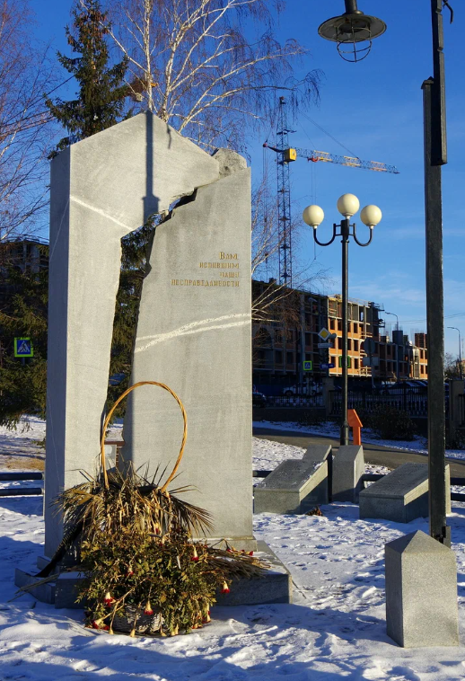

Мемориал жертвам полит. репрессий
В 1967 году состоялось открытие памятника с Вечным огнем в городском Сквере. Автор - Валентин Федорович Тётушкин.
В 1999 году установлены танк Т-34 и 2 противотанковые пушки.
В 2001-2016 гг. появились мартиролог верхнепышминцам - участникам Великой Отечественной войны, Мемориал участникам локальных войн, памятники Неизвестному солдату и Труженикам тыла Великой Отечественной войны.
В 2020 году построена Аллея героев с 17 гранитными постаментами, 15 барельефами героев-верхнепышминцев.
Адрес: ул. Чистова, 2, Верхняя Пышма, Свердловская обл., 624090